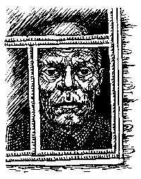
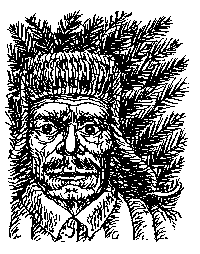
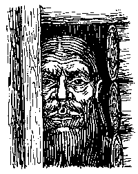

ОТЕЦ ГЕРМОГЕН

Корреспонденту ПГ удалось повстречаться с последним свидетелем преступления, совершенного Романом Степановичем Анохиным. Старец Гермоген (в миру Сергей Степанов) - тот самый единственный хулиган, которому чудом удалось избежать сурового анохинского возмездия. Нам посчастливилось ознакомиться и со следственными материалами по делу Анохина, которые до сих пор хранятся в архиве Наро-фоминского ОВД. Вот что свидетельствовал Степанов в своих показаниях от 3 февраля 1976 года (орфография первоисточника сохранена): "В илектричке мы выпили три бутылки вина. Все стали пьяные, а я не пьянею. Я и заборов не ламал, толька одну штахетину поломил, как раз на участке старика. Меня Петька заставил. А так я ваще против был. Асобенно мне не панравилось, когда Колька Рябинкин снес всю детскую площадку, и лампочки на елке руками давил. Патом все ребята разбегались и вместе на заборы падали, и они ламались. А я рядом стоял и сматрел. Патом все ламали штахетины и били ими фанари. Кто больше набьет. Петька самый меткий, он один почти все фанари набил, и его за ето девчонки целавали. А патом на нас ети сабаки напали. Я сабак не убивал. Когда Петька штахетиной розбил сабаке голову, я не бил. Патом Машка предложила на сабаку мертвую писать, все стали, а я не стал. Машка первая сняла трусы и писала. А Колька бил сабаку ногами долго и плевал на нее. Меня тагда стало ташнить и я ушел за сорай. Я ташнился. И вдруг услыхал как Леха заржал и сказал кому-то: "Дед, дай водки, а не то фитиль те в жопу вставлю". Леха так шутит всегда. И патом я услыхал вой страшный и выстрелы. Я вначале из-за сарая высунулся и увидал тагда глаза страшные и лысину. И дал деру. Патом не помню".
 Из материалов дела выясняется, что два дня спустя Степанов был случайно обнаружен лесником Темиркановым в одном из наро-фоминских лесов. Вот как в своих показаниях описывает Темирканов произошедшие с ним события: "Короче, сижу я в обычном месте, в засаде то есть, и жду зверя, кабана ентова. Уже ружьишко нацелил и тут вдруг проносится мимо меня по тропе с диким криком мальчонка. Причем крик такой нечеловечий, что кровь в жилах стынет. Ну, думаю, вот те раз. Короче, бросился вдогонку. Слава богу, обходные пути знаю. Подстерег я его на опушке и что уж тут душой кривить, очебуречил что есть мочи прикладом-то по маковке. А малец ентот, что звереныш - воет как ни в чем ни бывало, царапается и кусается. Чуть было не загрыз меня, поганец. Пришлось еще пару раз залупонить и ногами потоптать немного. Короче, связал я его опосля и в участок-то и доставил. Делов-то немного".
Ознакомившись со столь интересными материалами мы, разумеется, заинтересовались дальнейшей судьбой "наро-фоминского ябеды" (так между собой окрестили Степанова сотрудники ОВД). Узнав, что Степанов десять лет назад принял монашеский сан, а вскоре после этого удалился в один из заброшенных уголков Псковской губернии, мы, не долго думая, оформили командировку и отправились на встречу с отцом Гермогеном. От станции ехали на лошадях до самого причала. Светало, кричали гаги и дикие утки. Местные мужики за бутылку водки согласились переправить нас на катере на остров, где находится скит отца Гермогена. Когда набралось нужное количество пассажиров (к нам присоединились две совсем молоденькие девушки, по виду еще школьницы, и старичок в косоворотке и военной беретке, лихо заломленной набекрень), завели мотор. В обед мы прибыли на остров. Старичок, оказавшийся заядлым паломником, посещал отца Гермогена ежегодно и потому с видом знатока потащил нас к неприглядного вида деревянной хибаре, стоявшей почти у самого песчаного берега. "Местная гостиница", - пояснил он. Внутри оказались три ряда полатей, стол и два плетеных кресла. Выяснилось, что старец выходит к людям не каждый день, и мы обречены дожидаться счастливого момента в этой хибаре. Но нам повезло - мы прождали всего два дня. От остальных жаждавших прикоснуться к рукаву отшельника (таково было местное поверие - коснувшийся рясы обретал духовное исцеление) мы узнали, что отец Гермоген - не только прорицатель и ясновидец, но и замечательный живописец.

Утром третьего дня прошел слух, что на рассвете старец ненадолго высунулся из своего жилища. Это был знак. Гурьбой мы бросились к его обители. Однако там уже собралась немеренная толпа почитателей святого отца. Мы выстроились в цепочку, цепочка сложилась в полукруг и покатилась мимо старца. Отец Гермоген на вид был совсем молод, но длинные седые борода и волосы придавали величие его облику. Широким размашистым крестом он осенял каждого проходившего мимо, а некоторым что-то шептал на ухо и дарил маленькие иконки. Когда дошла очередь до меня, я набрался смелости, нагнулся к самому лицу старца и попросил: "Отец Гермоген, мы нуждаемся в вашей аудиенции. Расскажите нам, пожалуйста, об Анохине". Реакция отца Гермогена оказалась для меня совершенно неожиданной. Я предполагал, что может произойти все, что угодно, но только не то, что произошло в действительности. Старец побелел, губы его затряслись, он вдруг закатил глаза, громко пукнул и завыл. Завыл истошно, зверски, вой его призывным колокольным звоном распространился над островом. Поклонники отца Гермогена вначале метнулись прочь, а затем вернулись обратно, всем гуртом навалились на нас и потащили к воде. Меня схватили за ноги и долго били головой об землю, а потом стали топить. Каждый раз, когда меня окунали в воду, то хором кричали "во имя отца" или "во имя сына". На словах "во имя святого духа" я захлебнулся. Но перед тем как захлебнуться, в последний раз увидел то, что все это время неотступно стояло перед моими глазами. Ведь, когда меня потащили прочь от отца Гермогена, я успел через его плечо заглянуть в обитель. Удивительным образом картины старца оказались полностью идентичны работам Анохина. На них были изображены заборы.